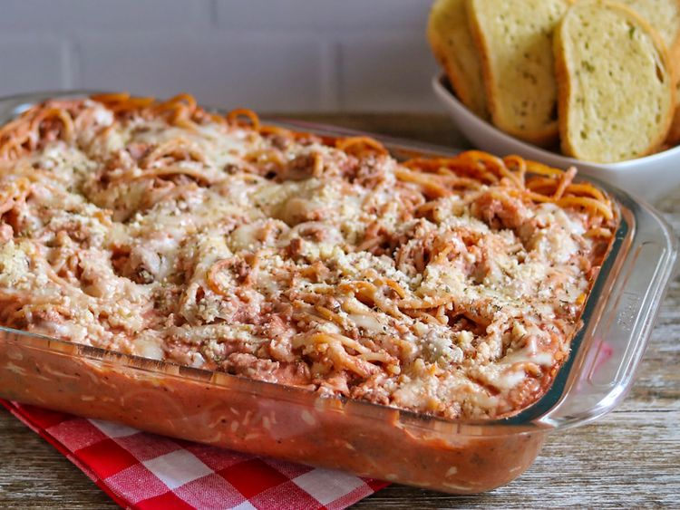

This easy spaghetti casserole dish with ground beef is deliciously rich, hearty, and cheesy.
This crowd-pleasing spaghetti casserole recipe will satisfy all your comfort food cravings.
Gather all ingredients. Preheat the oven to 350 degrees F (175 degrees C). Spray a 9x13-inch baking dish with cooking spray; set aside.
Boil spaghetti in generously salted water until cooked through but still firm to the bite, 8 to 10 minutes. Drain and set aside.
While pasta cooks, stir cream cheese, sour cream, and 1 cup of mozzarella cheese together until combined; set aside.
Heat olive oil in a large high-sided skillet over medium-high heat. Add beef in large chunks and cook, undisturbed, until lightly browned, about 2 minutes.
Add onion, garlic, Italian seasoning, salt, and pepper. Continue to cook, breaking up meat into smaller pieces with a wooden spoon and stirring occasionally, until almost cooked through, about 3 minutes. Remove from heat and tilt the pan to pool grease onto one side, trying to keep the beef mixture on the other. Use a large spoon to remove grease; discard grease once cooled.
Add marinara to beef mixture in skillet; stir until combined. Add reserved spaghetti. Fold and stir until well coated in sauce.
Transfer ½ of the pasta mixture to prepared baking dish. Spread sour cream mixture evenly over pasta mixture in baking dish, then top with remaining pasta mixture.
Sprinkle remaining 1 cup mozzarella evenly over spaghetti mixture. Cover loosely with aluminum foil and place baking dish on a baking sheet.
Bake in preheated oven until cheese has melted, about 30 minutes. Remove aluminum foil and sprinkle top with Parmesan cheese. Increase oven temperature to broil.
Broil until cheese has started to turn golden brown, 3 to 4 minutes. Sprinkle with parsley and serve.
Enjoy!
Homepage